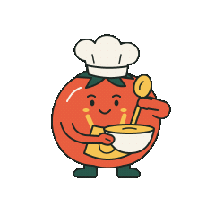

Receitas sem drama
Cozinhe com o que tem.
Ideias frescas, zero desperdício: descreva o prato, o tempo e a dieta. O gerador monta a receita inteira — ingredientes com medida exata, modo de preparo em passos e dicas que evitam erro.
Sua receita aparece aqui
Preencha o formulário ao lado e o gerador devolve o prato completo: ingredientes medidos, modo de preparo e as dicas que fazem a diferença.

Preparando sua receita…
Favoritos
As receitas salvas ficam guardadas neste navegador — nada sai do seu computador.